Маджонг: как выглядит сейчас
Сборка port-art2, 11.09.2026. Слева на каждой паре - макет Ани, справа - живой экран игры, снятый сегодня. Всё, что видно справа, кроме текста, это её файлы.
Коротко
Картинок в игре 428. Её и наших 361, из исходной игры 67.
Отдельных файлов внутри сборки (атласы, звук): наших 10 из 84. Один файл это пачка картинок, поэтому доли по файлам и по картинкам разные.
Осталось дорисовать: 8 кадров интерфейса, 23 кадров окон и рангов, полоса загрузки со спиннером и 21 звук.
Все экраны разом
Девять экранов игры. В каждой ячейке слева макет Ани, справа наш экран. Четыре последних мы ещё не сняли: чтобы они открылись, надо доиграть уровень или потратить подсказки.

Экраны по одному
Меню
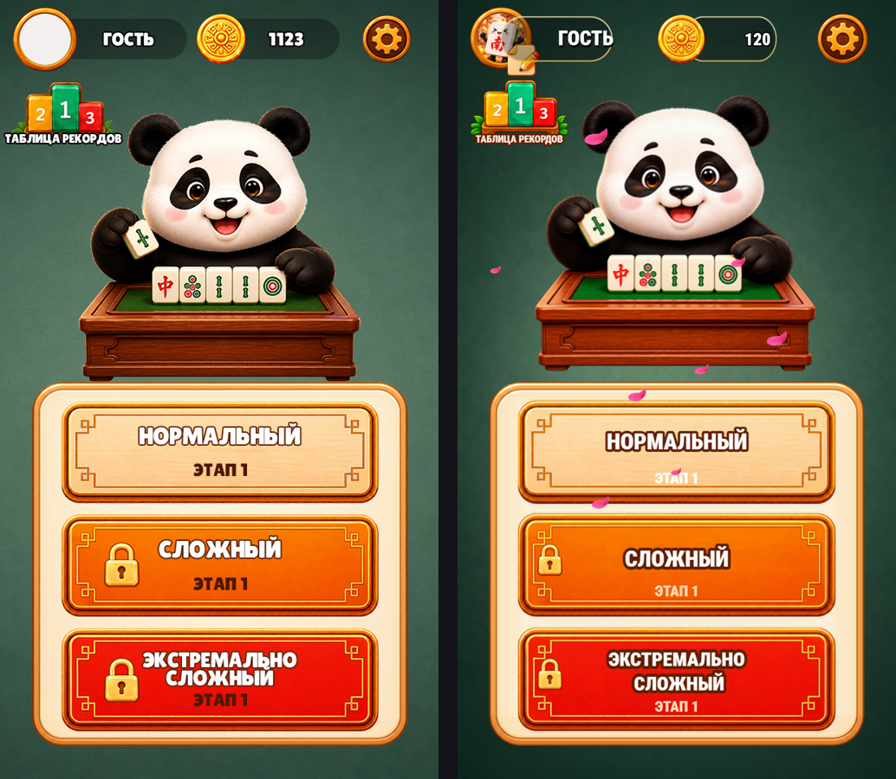
слева макет Ани, справа игра
Игровой экран
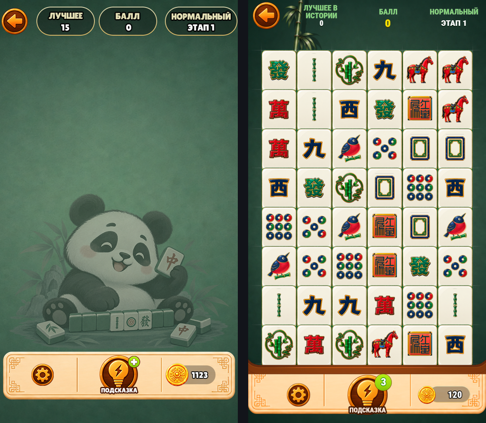
слева макет Ани, справа игра
Настройки
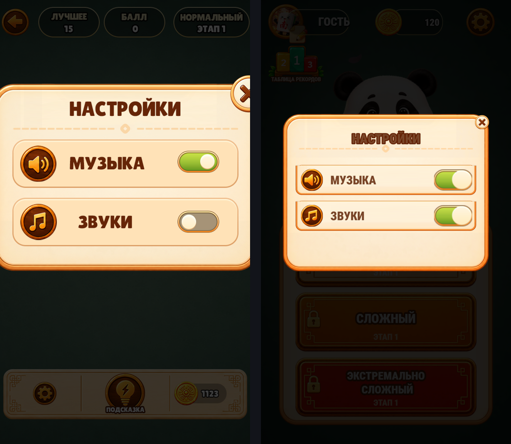
слева макет Ани, справа игра
Смена аватара
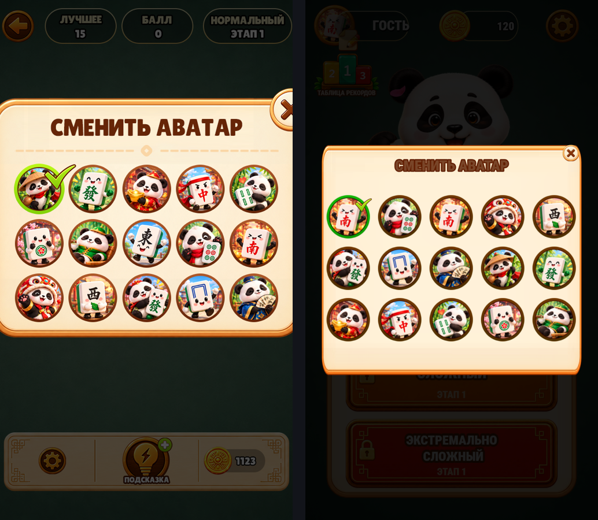
слева макет Ани, справа игра
Таблица рекордов
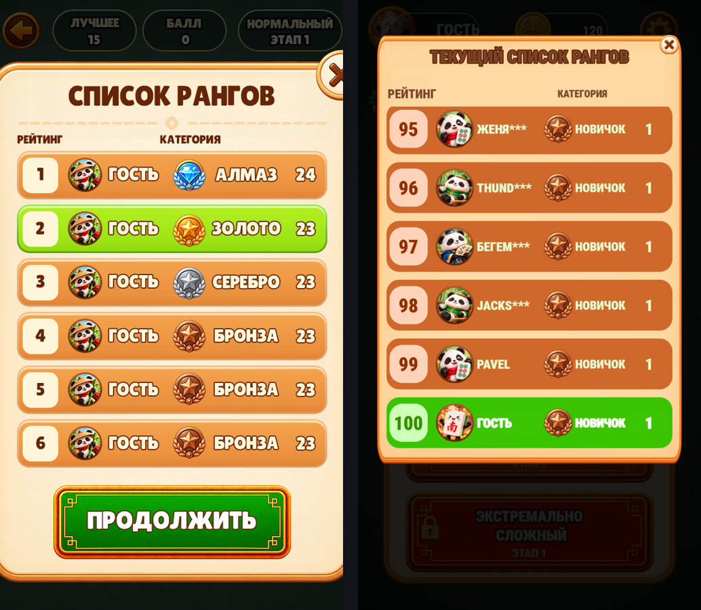
слева макет Ани, справа игра
Подсказка кончилась
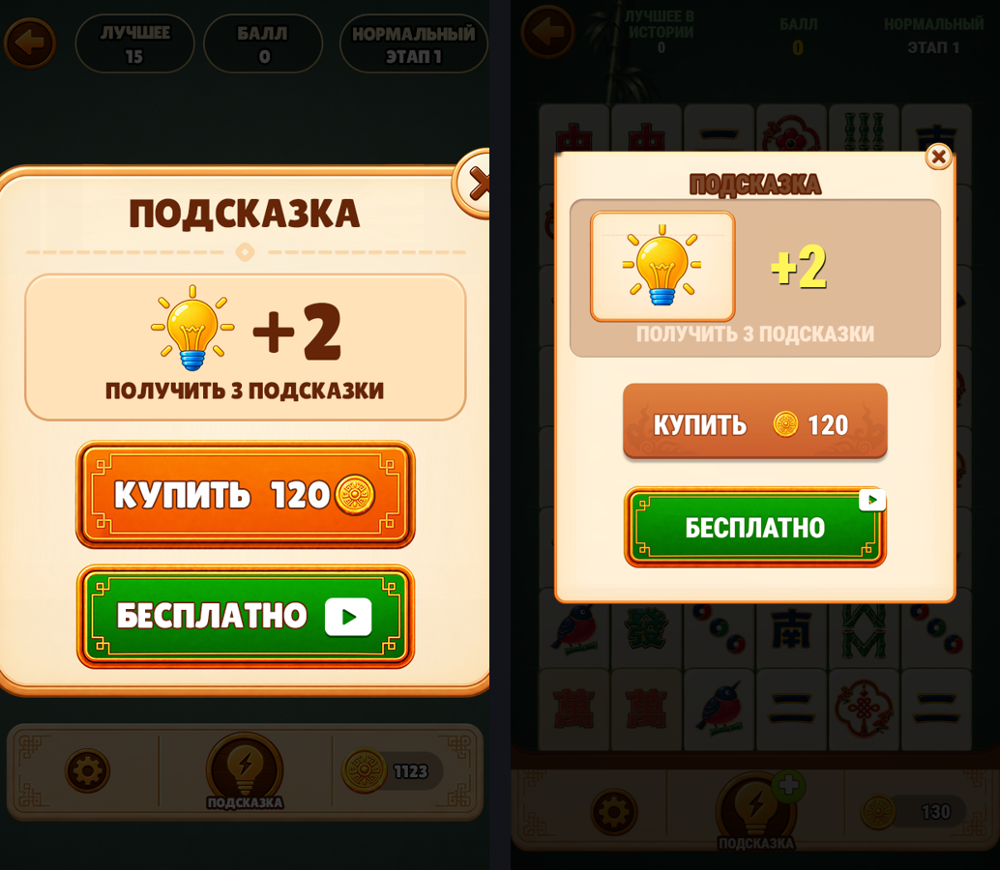
слева макет Ани, справа игра
Уровень пройден
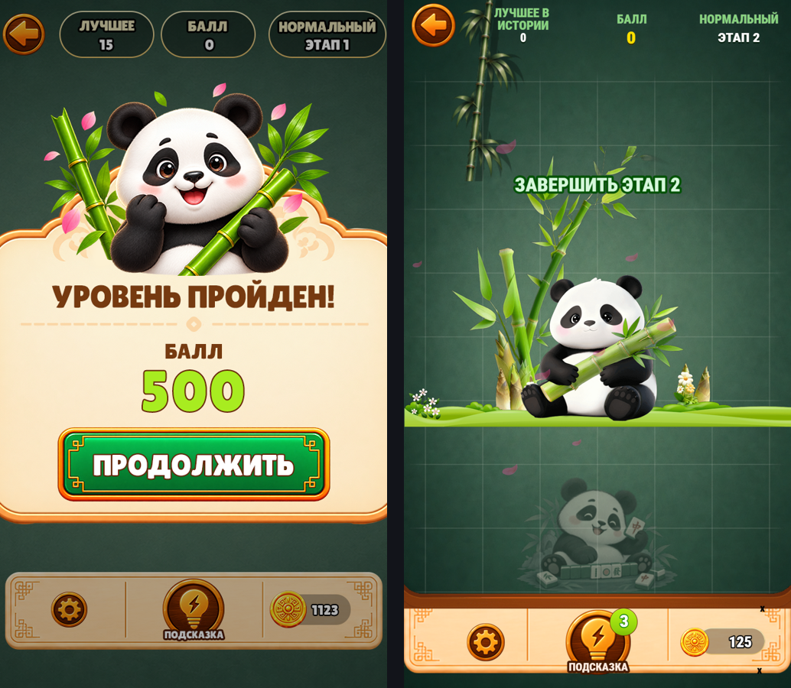
слева макет Ани, справа игра
Нет ходов
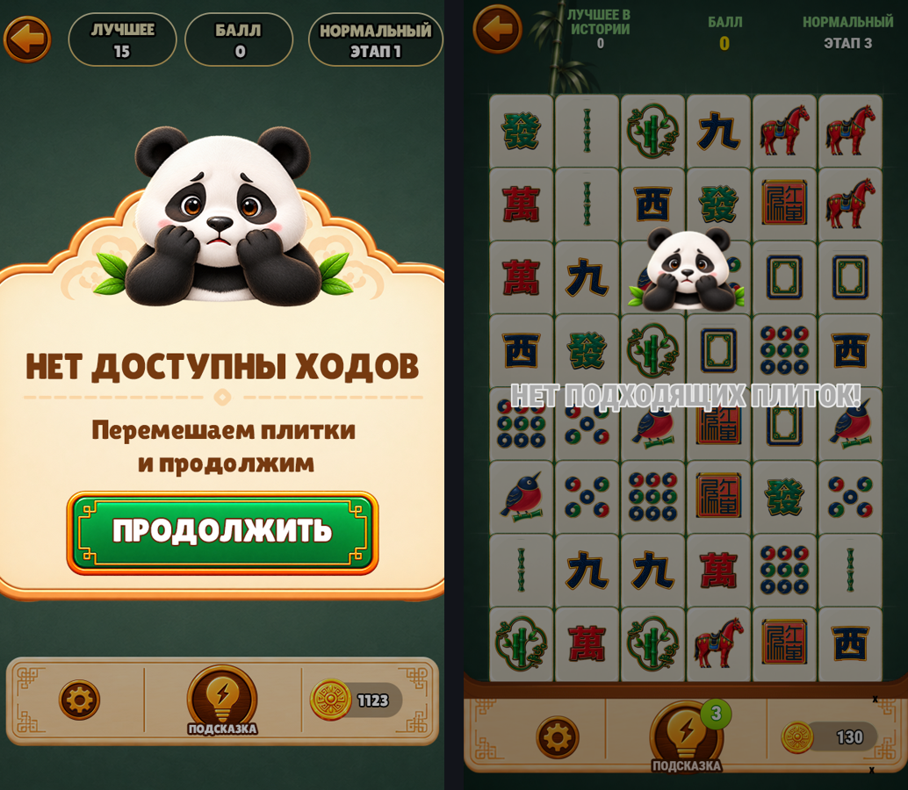
слева макет Ани, справа игра
Лучший результат
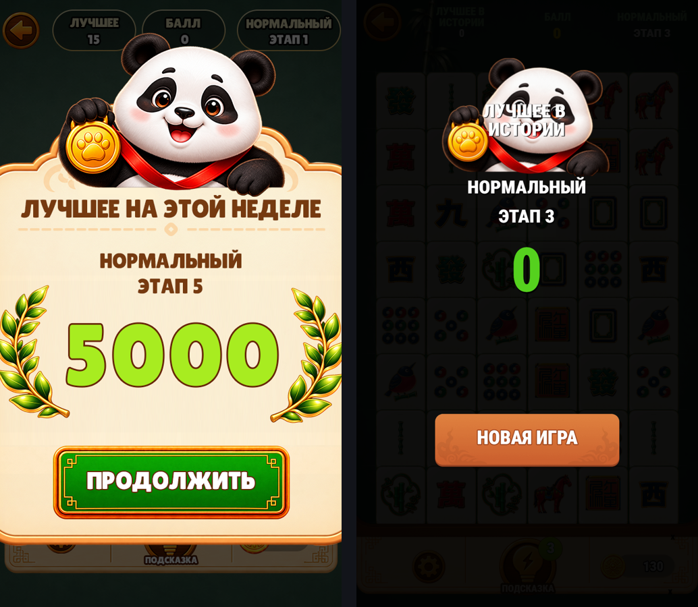
слева макет Ани, справа игра
Меню: сведено с её макетом
Кремовой панели под тремя кнопками у неё не было отдельным файлом, поэтому она вырезана прямо из макета меню: взяты её углы и края, а середина заменена ровной кремовой заливкой её же цвета. Движок растягивает только середину, так что в игре панель любого размера, а рисунок рамки остаётся таким, как она нарисовала. Ни одной её буквы и ни одной кнопки из картинки в игру не попало.
Заодно пересчитаны координаты. Раньше они подбирались на глаз, теперь посчитаны: её макет это обои 1920x1080, внутри которых портретный экран стоит колонкой той же высоты, то есть шириной 1080*9/16 = 607.5 точки. Значит одна точка макета это 1.7778 точки игры, и каждая коробка переводится арифметикой. Панель 930x903, кнопки 780x253 с шагом 280.
Шрифт тоже выбран меркой, а не на глаз. Её надпись «СЛОЖНЫЙ» шириной 292 точки при высоте заглавной 45. При той же высоте заглавной Roboto Condensed Black даёт 289, Fira Sans Condensed ExtraBold 285, Oswald 248, Anton 182, а стоявший до этого Montserrat ExtraBold 377. Взят Roboto Condensed Black, лицензия SIL OFL, кириллица есть.
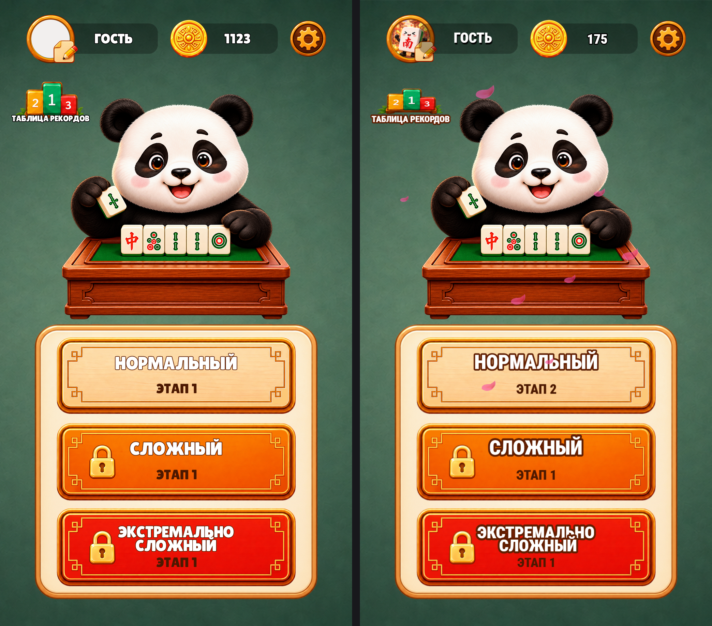
Слева макет Ани, справа живой снимок игры. Что сходится по меркам:
элемент у Ани у нас сдвиг / размер панель 880x866 в ( 540,1381) 880x866 в ( 540,1379) dx +0 dy -2 dw +0 dh +0 кнопка 1 838x178 в ( 539,1039) 838x178 в ( 539,1039) dx +0 dy +0 dw +0 dh +0 кнопка 2 778x188 в ( 541,1324) 780x188 в ( 540,1324) dx -1 dy +0 dw +2 dh +0 кнопка 3 778x150 в ( 541,1623) 780x150 в ( 540,1623) dx -1 dy +0 dw +2 dh +0 панда 736x698 в ( 518, 579) 730x698 в ( 515, 579) dx -3 dy +0 dw -6 dh +0 рекорды 318x174 в ( 169, 291) 294x186 в ( 181, 273) dx +12 dy -18 dw -24 dh +12 шестерня 118x116 в ( 951, 96) 122x122 в ( 949, 95) dx -2 dy -1 dw +4 dh +6
Отличается только живое: имя игрока, число монет, нарисованная аватарка вместо пустого кружка на макете и падающие лепестки, которых на статичной картинке быть не может.
Что стало с её отдельными файлами
Она прислала 54 отдельных картинок интерфейса плюс 15 аватарок. В сборке стоит 46. Формат у них правильный: отдельный элемент, прозрачный фон, крупный размер. Именно поэтому почти всё на экранах выше уже её.
Не встали 8 штук, и по трём разным причинам:
| файл | почему не стоит |
|---|---|
| bg_1, bg_1920x1080 | горизонтальные фоны, игра портретная |
| overbg_1, overbg_2 | лавровые ветки для экрана рекорда: в игре нет кадра, куда их положить |
| win | панда для окна победы: то же самое, слота нет |
| sub_line | пунктир под заголовком: рисуется кодом, файл не нужен |
| jinbidi | второй вариант тёмной пилюли, взят другой её файл |
| grade_1 | лишний значок ранга, тиров одиннадцать, рисунков пять |
И отдельно то, что мешает больше всего. Её элемент и тот же элемент внутри её экрана - это два разных рисунка. Нейронка перерисовывает заново каждый раз. Ниже одна и та же кнопка «Сложный»: сверху отдельный файл, снизу она же из макета меню. Разные уголки, разный кант, разная фаска.
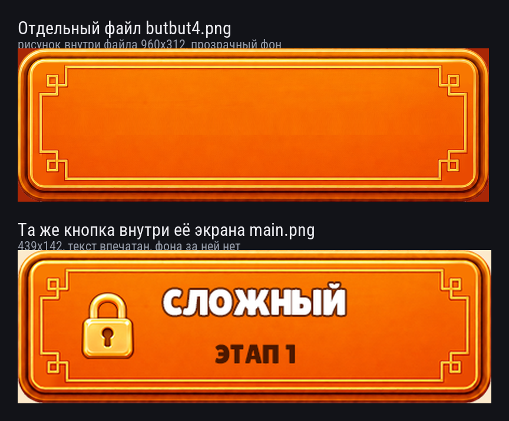
Из-за этого «поставить её элементы» и «получить её экран» - разные цели. Мы ставим её файлы, а позицию и размер снимаем с её макета, поэтому экран сходится по геометрии, но мелкий рисунок элемента отличается от того, что на её картинке.
Экран, на который макета нет
Список рангов после уровня
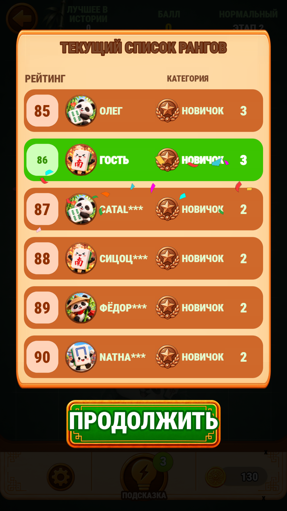
Чего не хватает: интерфейс
8 картинок. Это те кадры, где до сих пор пиксели исходной игры и которые видно. Кадры выключенных экранов (выбор темы, шапка окна) сюда не попали - их рисовать не надо.

Чего не хватает: окна и ранги
23 картинок. В основном это тянущиеся подложки строк и полосы прогресса: у них движок растягивает середину, поэтому рисовать надо так, чтобы узор был только по краям.
Можно ли просто вырезать элементы из её картинки
Пробовали, вот что вышло. Сверху плашка под надписи: её у нас не было, и она собрана по цветам, снятым пипеткой прямо с её макета - заливка rgb(27, 48, 38), контур rgb(227, 205, 143). От её собственной не отличается. Снизу строка таблицы рекордов, вырезанная из макета буквально: её цифра «23» стоит вплотную к скруглённому торцу, кусок цифр попал в край, а зеркальная вторая половина его удвоила. Эти вырезы удалены и в игру не попали.

И главное, что выяснилось попутно: подложки строк в рекордах и подложка полосы прогресса в атласе игры белые. Оранжевый цвет строк и зелёный у строки игрока делает сама игра, крася белую плашку на ходу. Значит цвет там уже задан кодом, и вкладывать туда цветной рисунок нельзя - он подерётся с покраской. Правило на будущее: прежде чем резать, смотрим кадр в атласе. Белая плашка означает, что от художника нужен силуэт, а не цвет.
Что попросить у Ани
| Элемент | Где | Как рисовать |
|---|---|---|
| Плашка под надписи | игровой экран | тёмная плашка со светлым контуром, пустая, без текста |
| Звёзды | экран победы | маленькая 96x101 и большая с сиянием 136x138 |
| Отрезок линии | игровой экран | 419x3, из него собирается сетка доски и линия соединения пар |
| Рука-указатель | обучение | 100x114 |
| Подложка строки | таблица рекордов | растягивается, узор только по краям |
| Полосы прогресса | ранги | дорожка и заполнение, тоже растягиваются |
Подробный лист с точными размерами и картинками - на отдельной странице.
Про шрифт
Единственное на экране, что не её рисунок, - это буквы. Текст в игре не картинка: движок рисует его вживую из файла шрифта, потому что языков три, а числа меняются. На её макетах буквы нарисованы внутри картинки, достать оттуда шрифт нельзя. Подобран ближайший настоящий: Montserrat ExtraBold, заглавными, как у неё.
Страница для команды. Внутри есть картинки исходной игры - они показаны затем, чтобы было видно, что предстоит заменить. Поисковикам страница закрыта.